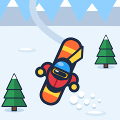

Powder Rush: Snowboard
Support
Found a bug or need help? Open an issue at github.com/JacobGrigg14/powder-rush-site/issues and include your device model if you can.
Common questions
I got a new phone or reinstalled the game. Where are my purchases?
Open Locker or Mountains and tap RESTORE. Make sure you're signed in with the same Apple ID or Google account you bought them with.
Where did my coins and upgrades go?
Coins, upgrades and best distances are saved only on your device, so they don't carry over to a new device or a reinstall. Items bought with real money can always be restored.
Does the game have ads?
No. Powder Rush is free with no ads. Optional skins, mountains and the Season Pass support the game.
How do I get a refund?
Refunds are handled by the store: on iPhone at reportaproblem.apple.com, on Android through Google Play's order history.